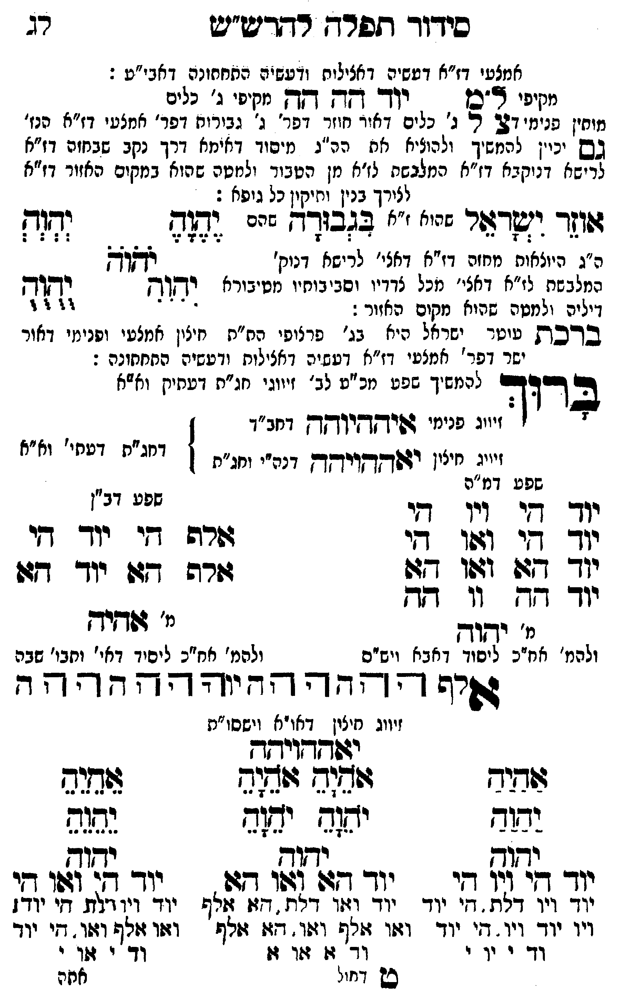

Neue Klartextfassung
[מקיפי ל"ם] יוד הה הה [מקיפי ג' כלים] [מוחין פנימי דצ'] צ ל ג' [ג' כלים דאור חוזר דפר' ג' גבורות דפר' אמצעי דז"א הנז'] [גם יכוין להמשיך ולהאציל לה ה"ג מיסוד דאימא דרך נקב החזה דז"א לרישא דנוקבא דז"א המלבשת לז"א מן הטבור ולמטה שהוא מקום האזור דז"א לצורך בנין ותיקון כל גופא:] אוזר ישראל [שהוא ז"א] בגבורה [שהם] === טבלה === [טור ימין] יֶהֶוֶהֶ יִהִוִהִ [טור אמצעי] יֹהֹוֹהֹ [טור שמאל] יְהְוְהְ יֻהֻוֻהֻ === סוף טבלה === [ה"ג העולות מחזה דז"א דאצי' לרישא דנוק' המלבשת לז"א דאצי' מכל צדיו ופנימיותו מחיבורא דיליה ולמטה שהוא מקום האזור:] ■ ברכת עוטר ישראל ■ [היא בג' פרצופי הת"ת חיצון אמצעי ופנימי דאור ישר דפר' אמצעי דז"א דעשיה דכללות ורביעיה התחתונה:] ברוך [להמשיך שפע מכ"ע לב' זיווגי חג"ת דעתיק וא"א] [זיווג פנימי איההיוהה דחב"ד] [זיווג חיצון יאההויהה דכ"ח ותו"ח] [דחג"ת דעתי' וא"א] === טבלה === [טור ימין — שפע דמ"ה] יוד הי ויו הי יוד הי ואו הי יוד הא ואו הא יוד הה וו הה [מ' יהוה] [ולכת' חב"ד ליסוד דאבא ויש"ס] [טור שמאל — שפע דב"ן] אלף הי יוד הי אלף הא יוד הא [מ' אהיה] [ולכת' חב"ד ליסוד דאי' ותבו' שבה] === סוף טבלה === אלף ה הה ו וה יה יהוה הההה [זיווג חיצון דאו"א וישסו"ת] יאההויהה === טבלה === [טור ימין] אַהַיַהַ יַהַוַהַ יהוה יוד הי ויו הי יוד ויו דלת, הי יוד ויו יוד ויו, הי יוד וד י וי י [טור אמצעי] אָהָיָהָ אָהָיָהָ יָהָוָהָ יָהָוָהָ יהוה יוד הא ואו הא יוד ואו דלת, הא אלף ואו אלף ואו, הא אלף וד א או א [טור שמאל] אֵהֵיֵהֵ יֵהֵוֵהֵ יהוה יוד הי ואו הי יוד ויו דלת, הי יוד ואו אלף ואו, הי יוד וד י או י === סוף טבלה ===
Original gegen neue OCR · Niqqud für Vergleich ausgeblendet
Original
[מקיפי ל"ם]K070-001 יוד הה הה [מקיפיK070-002 ג' כלים] [מוחין פנימי דצ'] צ ל ג' [ג'K070-003 כלים דאורK070-004 חוזר דפר' ג' גבורותK070-005 דפר' אמצעיK070-006 דז"א הנז'] [גם יכוין להמשיך ולהאציל לה ה"ג מיסודK070-007 דאימא דרך נקב החזהK070-008 דז"א לרישא דנוקבאK070-009 דז"א המלבשתK070-010 לז"א מן הטבור ולמטה שהוא מקוםK070-011 האזור דז"א לצורךK070-012 בנין ותיקוןK070-013 כל גופא:] אוזר ישראל [שהוא ז"א] בגבורה [שהם] === טבלה === [טור ימין] יהוה יהוה [טור אמצעי] יהוה [טור שמאל] יהוה יהוה === סוף טבלה === [ה"ג העולותK070-014 מחזה דז"א דאצי' לרישא דנוק' ∅K070-015 המלבשת לז"א דאצי' מכל צדיו ופנימיותו מחיבוראK070-016 דיליה ולמטה שהוא מקום האזור:] ■ ברכת עוטרK070-017 ישראל ■ [היאK070-018 בג' פרצופי הת"תK070-019 חיצון אמצעי ופנימי דאור ישר דפר' אמצעי דז"א דעשיה דכללות ורביעיה התחתונה:] ברוך [להמשיךK070-020 שפע מכ"עK070-021 לב' זיווגי חג"ת דעתיק וא"א] [זיווגK070-022 פנימי איההיוהה דחב"ד] [זיווגK070-023 חיצון יאההויהה דכ"ח ותו"ח] [דחג"ת דעתי' וא"א] === טבלה === [טור ימין —K070-024 שפע דמ"ה] יוד הי ויו הי יוד הי ואו הי יוד הא ואו הא יוד הה וו הה [מ' יהוה] [ולכת' חב"דK070-025 ליסוד דאבא ויש"ס] [טור שמאל — שפע דב"ן] אלף היK070-026 יוד הי אלף האK070-027 יוד הא [מ' אהיה] [ולכת' חב"ד ליסוד דאי' ותבו' שבה] === סוף טבלה === אלף ה הה ו וה יה יהוה הההה [זיווג חיצון דאו"א וישסו"ת] יאההויהה === טבלה === [טור ימין] אהיה יהוה יהוה יוד הי ויו היK070-028 יוד ויו דלת, הי יודK070-029 ויו יוד ויו, היK070-030 יוד ∅K070-031 וד י ויK070-032 י [טור אמצעי] אהיה אהיה יהוה יהוה יהוה יוד הא ואו הא יוד ואו דלת, הא אלף ואו אלף ואו, הא אלף וד א או א [טור שמאל] אהיה יהוה יהוה יוד הי ואו הי יוד ויו דלת, הי יוד ואו אלף ואו, הי יוד וד י או י === סוף טבלה ===K070-033
OCR · fehlbar
סידוך ותפרח רתרט"ש רג אי[צשי. דז"א דששיה דאצילוח זדעשיה החחחונה. דאבי"ע : מקיפי צ'"כןK070-001 יוד דקדק דקדק מקיפיK070-002 ג' ∅K070-003 כלים מוחין חנימי 27 רי נ'. כלים ואידK070-004 חוזר דפר' ג' גבורוחK070-005 דפר' אמצטיK070-006 דז"א הנז' גש ניין להזשיך ולהוליז אח הה"נ מיסוךK070-007 דאימא דרך נקב שבזזהK070-008 דז"א ל צ"שא דגיקבאK070-009 דז"א המלנשתK070-010 לז"א מן הטבור ילמטה בהוא. במקיםK070-011 האזור דז"א לצירךK070-012 בנין וחיקיןK070-013 כל גופא : זוז י(שרצזר י' לצבי צי' וג[ יד(ת ה"ג היוצאוחK070-014 מחזה דז"א דאצי' לרישא דנוק' כב]ךK070-015 המלבשת לז"א דאצי' מכל צדדיו וסביבוחיו מטיבורא ד[ךךץ וקחךקK070-016 דיליה ולמטה שהוא מקום האזור : - - - 3 ו ו בבדכק טוטרK070-017 ישראל היאK070-018 בג' פרצופי הח"חK070-019 חיצון אמצעי ופנימי דאור ישר דפר' אמצעי דז"א דעשיה דאצילות ודעשיה החחחונה : א דוך להמשיךK070-020 שפע מכ"טK070-021 לב' זיווגי חג"ת דעחיין ואצא ז זיויגK070-022 פנימי 4פידשיואךן דחב"ד זז וז לש זיויגK070-023 חיצון ודדדדזויךדן דנה"י וחג"ת דחג"ת דעחי' וא"אK070-024 שפע דמ"ה (גע וב' נדר ג( זי ף' יוך דזי 061-ו די דדרה שי יו- די יך 747: ו197ו -ג גשרה דש יו- דזו יז ך -3 ו' לא מ' שבלבן מ דדאיק ולהמ' אח"כK070-025 ליסוד דאבא וישים ולהמ' אח"כ ליפסיד דאי' וחבו' שבה גשרד ד ד דד' דד יוף ף - - - ף ד זיווג נזיצון דאו"א וישסו"ת ישחךויחח תיד שבוש (ומ(ד צוזוב יחוג ית(ג יזא(ד נשגר נדגש שגד גדוש יך זי (ךו די יוך דז: (75ו גז: גוך ש. ותו י יז- ויו דלף . דיK070-026 יוד ∅K070-027 יוד וז:ז דלת. זו' [זלפףK070-028 יוד ויו וילת. די יוד:K070-029 ויו יוד ויו. די יודך וזוו זלף וז:ו. דזו זולף - וזו זלף וצו. תיK070-030 יוד וך י יו י וד' ז זזו זוK070-031 וד י ז:ןK070-032 י בש דחול אחהK070-033